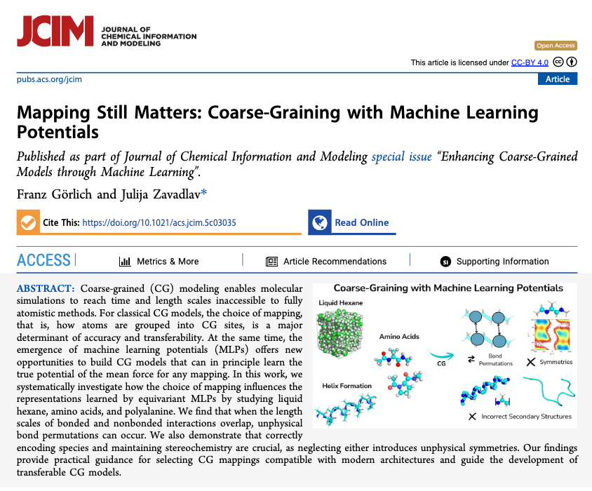
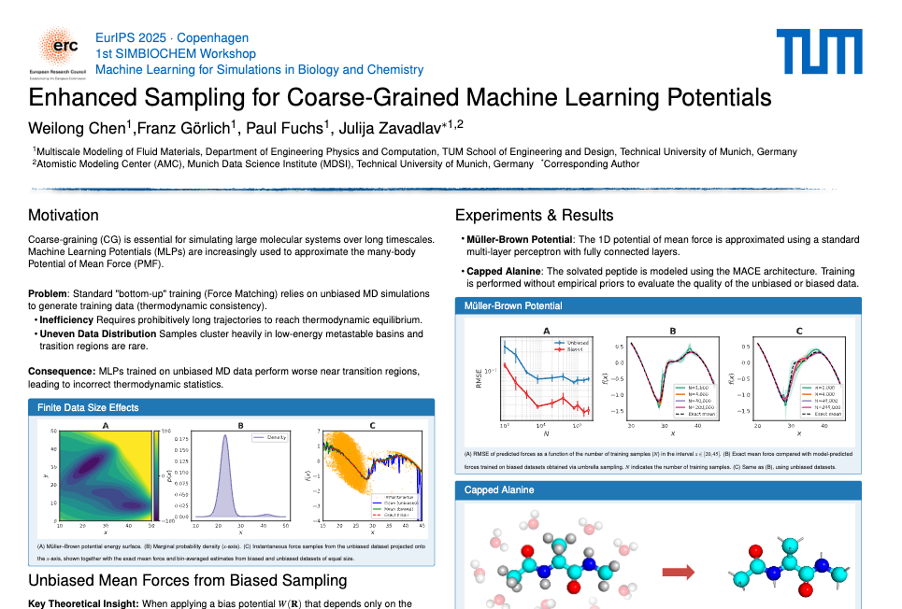
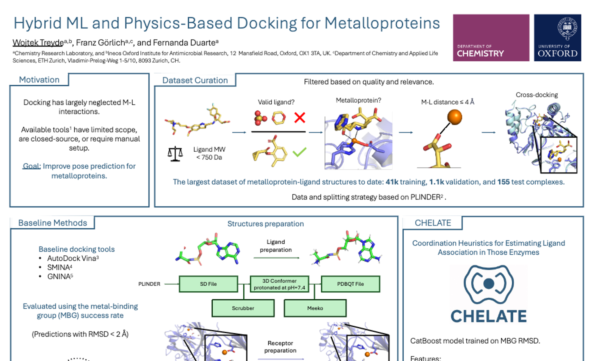

publications
2025

Mapping Still Matters: Coarse-Graining with Machine Learning Potentials
Franz Görlich1 and Julija Zavadlav1,2
1Professorship of Multiscale Modeling of Fluid Materials, Department of Engineering Physics and Computation, TUM School of Engineering and Design, Technical University of Munich, 80333 Munich, Germany
2Atomistic Modeling Center (AMC), Munich Data Science Institute (MDSI), Technical University of Munich, 85748 Garching, Germany
Preprint | DOI: arXiv:2512.07692

Enhanced Sampling for Efficient Learning of Coarse-Grained Machine Learning Potentials
Weilong Chen1, Franz Görlich1, Paul Fuchs1, and Julija Zavadlav1,2
1Professorship of Multiscale Modeling of Fluid Materials, Department of Engineering Physics and Computation, TUM School of Engineering and Design, Technical University of Munich, 80333 Munich, Germany
2Atomistic Modeling Center (AMC), Munich Data Science Institute (MDSI), Technical University of Munich, 85748 Garching, Germany
Journal of Chemical Theory and Computation | DOI: 10.1021/acs.jctc.5c01712

A chemical language model for molecular taste prediction
Yoel Zimmermann1,2, Leif Sieben1,2, Henrik Seng1,2, Philipp Pestlin1,2, & Franz Görlich1,2
1Department of Chemistry and Applied Biosciences, ETH Zurich, Zurich, Switzerland
2These authors contributed equally (authors sorted rev. alphabetical)
npj Science of Food | DOI: 10.1038/s41538-025-00474-z
posters
2025

Enhanced Sampling for Coarse-Grained Machine Learning Potentials
Weilong Chen1, Franz Görlich1, Paul Fuchs1, Julija Zavadlav∗1,2
1Multiscale Modeling of Fluid Materials, Department of Engineering Physics and Computation, TUM School of Engineering and Design, Technical University of Munich, Germany
2Atomistic Modeling Center (AMC), Munich Data Science Institute (MDSI), Technical University of Munich, Germany
∗Corresponding Author
EurIPS 2025 · Copenhagen 1st SIMBIOCHEM Workshop Machine Learning for Simulations in Biology and Chemistry | PDF

Hybrid ML and Physics-Based Docking for Metalloproteins
Wojtek Treydea,b, Franz Görlicha,c, and Fernanda Duartea
aChemistry Research Laboratory, and bIneos Oxford Institute for Antimicrobial Research, 12 Mansfield Road, Oxford, OX1 3TA, UK. cDepartment of Chemistry and Applied Life Sciences, ETH Zurich, Vladimir-Prelog-Weg 1-5/10, 8093 Zurich, CH.
WATOC 2025 - 13th Triennial Congress of the World Association of Theoretical and Computational Chemists | PDF